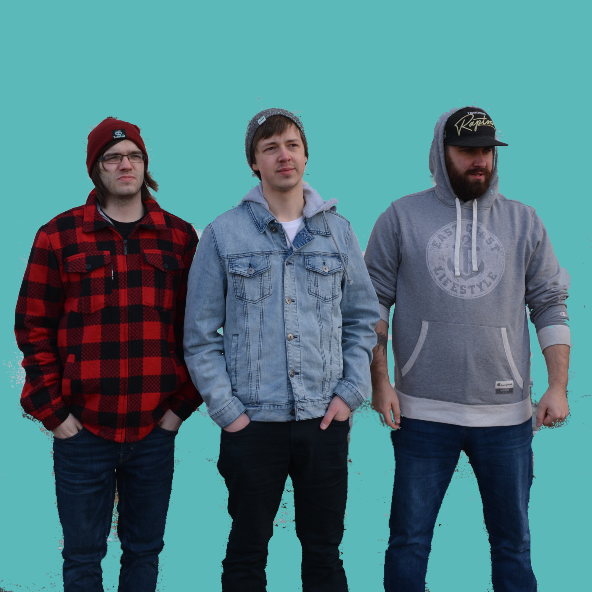

<<
<
Keep focus on line
Keep focus on stanza
>
>>
I lie awake in bed at night Over-thinking things I’ve said Was stupid a’ me to run my mouth What was I thinking, half-believing you care You brush me off so easily You’re gonna leave me in the dust I’m sinking in the quicksand, tell me What does it feel like walking on air? Feeling like I'm old in my youth Cause my cracked spine can’t seem to face the truth Maybe I’m a freak Maybe I’m naive Maybe I’m just dreaming I'm something I’ll never be Maybe I’m a freak Maybe I’m naive Or maybe, I’m a sucker for you Now that we’re on the mend I won’t forget to take my meds So I just empty the bottle All over the floor Those demons won't come 'round no more I’m as tattered as the holes in my jeans My nerves are worn and tattered all stitched at the seams! Maybe I’m a freak Maybe I’m naive Maybe I’m just dreaming I'm something I’ll never be Maybe I’m a freak Maybe I’m naive Or maybe, I’m a sucker for you And this winter’s been so c-c-c-cold... Like your fall from grace, where you lost all control Don't get me wrong I would fall if you let me cause you’re always out to get me So just sink your teeth into me, bite down and chew to the bone! I'll drive to the city and break down the door of your home! Well it hurts when it's over Got me crying on your shoulder Hopin' you won't be leaving too long Well, I'm a sucker, and you knew it all along I said maybe I’m a freak Maybe I’m naive Maybe I’m just dreaming I'm something I’ll never be Maybe I’m a freak Maybe I’m naive Or maybe, I’m a sucker for you I said maybe, oh maybe it's the truth Maybe, I’m a sucker Maybe I'm a sucker, ohhhh Maybe I'm a sucker for you
Load saved
Generate Lyrics
Render Video